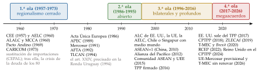
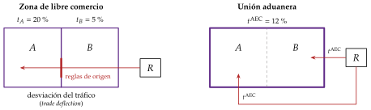
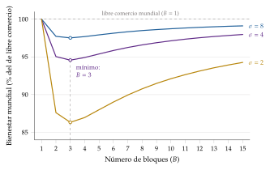
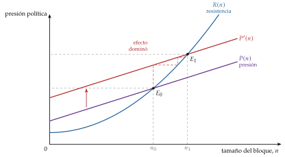
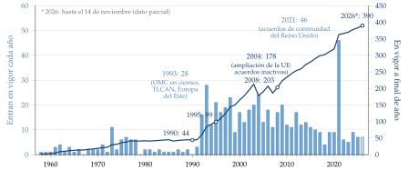
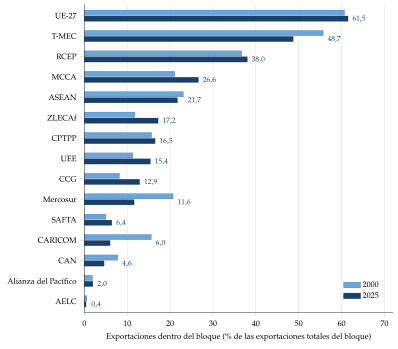
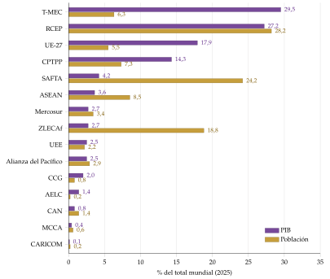

Tema 3.B.35
Procesos de integración no comunitarios.
Acuerdos regionales fuera de la UE: Balassa, peldaño o escollo, Krugman y el dominó de Baldwin, art. XXIV, T-MEC, Mercosur, ASEAN, RCEP, CPTPP y ZLECAf.
Exclusivo Material exclusivo de victorgutierrezmarcos.es y la app Oposición TCEE · DCE. Puedes usarlo libremente para tu estudio personal. No se autoriza su incorporación a otras plataformas, aplicaciones o servicios. Condiciones de uso.
Introducción
Enganche:
«Juntos, pero no revueltos», dice el dicho. Es la fórmula de casi todos los procesos de integración que existen fuera de la Unión Europea: los socios se quitan los aranceles entre sí, pero cada uno conserva su política comercial, su moneda y su soberanía.
En 2026 se ha visto lo que da de sí la fórmula. El 1 de mayo empezó a aplicarse el acuerdo comercial de la UE con el Mercosur, 25 años después de que empezara a negociarse; el 1 de julio, Estados Unidos se negó a renovar el tratado con México y Canadá (T-MEC) y lo dejó sometido a revisiones anuales; y la Zona de Libre Comercio Continental Africana ya ha sido ratificada por 50 países.
La pregunta que recorre la exposición es: ¿abren los bloques regionales el comercio mundial o lo trocean?
Relevancia:
Es la vía principal de la liberalización desde los 90: hay 390 acuerdos comerciales regionales (ACR; en inglés, regional trade agreements, RTA) notificados a la Organización Mundial del Comercio (OMC) y en vigor, y al menos otros 84 que no se han notificado. Todos los miembros de la OMC tienen al menos uno.
Los bloques pesan mucho: el T-MEC reúne casi el 30 % del PIB mundial, y la Asociación Económica Integral Regional de Asia (RCEP), algo más del 27 % del PIB y el 28 % de la población del mundo.
Para España: negocia sus acuerdos a través de la UE [ver tema 3.B.41], pero sus empresas tienen en América Latina buena parte de su inversión directa en el exterior [ver tema 4.A.23], y los bloques de fuera de Europa deciden en qué condiciones venden y producen allí [ver tema 4.A.22].
Contextualización:
Qué es: la integración económica es, a la vez, un proceso, el conjunto de medidas que suprimen la discriminación entre las unidades económicas de distintos países, y un estado, la ausencia de esa discriminación. Puede hacerse entre todos los países, en la OMC, o entre unos pocos, en acuerdos regionales que la OMC admite como excepción a la nación más favorecida.
De dónde viene: el regionalismo ha llegado en 4 olas (figura 1):
la de los 50 y 60, de regionalismo cerrado: en Europa, la Comunidad Económica Europea (CEE) y la Asociación Europea de Libre Comercio (AELC); en América Latina, bloques para industrializarse sustituyendo importaciones;
la de finales de los 80 y los 90, de regionalismo abierto (open regionalism): el Tratado de Libre Comercio de América del Norte (TLCAN), el Mercosur, la zona de libre comercio de la ASEAN y el Foro de Cooperación Económica Asia-Pacífico (APEC);
la de 1996-2016, de acuerdos bilaterales cruzados y cada vez más profundos, cuando la Ronda de Doha se atasca [ver tema 3.B.33];
y la actual, de megaacuerdos (CPTPP, RCEP, Zona de Libre Comercio Continental Africana) y de fragmentación, con el giro proteccionista de Estados Unidos [ver tema 3.B.21].
El objeto de esta exposición: los procesos de integración de fuera de la UE. La teoría de la integración se desarrolla aparte [ver tema 3.B.10]; aquí se resume lo necesario para valorar los bloques. La integración europea tiene sus propios temas, desde los tratados [ver tema 3.B.36], y los acuerdos de la UE con otros bloques se tratan con su política comercial y sus relaciones exteriores [ver tema 3.B.41] [ver tema 3.B.42]: aquí se ven desde el lado del bloque no comunitario.
Figura 1.– Las 4 olas del regionalismo, 1957-2026 
Problemática:
¿Qué formas toma la integración y por qué se integran los países con unos socios y no con todos?
¿Son los bloques regionales un peldaño o un escollo hacia el libre comercio mundial?
¿Qué procesos de integración hay fuera de la UE, cómo funcionan y en qué situación están en 2026?
¿Cuánto integran de verdad, y qué papel tienen en un comercio mundial que se fragmenta?
Estructura:
La exposición va de la teoría a los casos y de los casos al balance:
I. Justificación económica y marco jurídico (I): las formas de integración, por qué se integran los países, el debate del regionalismo frente al multilateralismo (con los modelos de Krugman y de Baldwin) y las reglas de la OMC.
II. Los procesos de integración no comunitarios (II): región a región, Europa y Eurasia, América, Asia-Pacífico, Oriente Medio y África.
III. Balance y situación actual (III): cuánto integran los bloques y qué papel tienen en un mundo fragmentado.
3.B.35. Procesos de integración no comunitarios
Introducción2′30″
I. Justificación económica y marco jurídico8′
1. Delimitación: formas de integración
2. ¿Por qué se integran los países?
3. Regionalismo frente a multilateralismo
4. Marco jurídico
II. Los procesos de integración no comunitarios13′30″
1. Europa y Eurasia
2. América
3. Asia-Pacífico
4. Oriente Medio y norte de África
5. África
III. Balance y situación actual5′
1. ¿Cuánto integran los bloques?
2. El regionalismo en un mundo fragmentado
Conclusión1′
Reparto del cante: introducción, 2′30″; I, 8′ (I.1, 1′30″; I.2, 1′30″; I.3, 4′; I.4, 1′); II, 13′30″ (II.1, 2′; II.2, 5′; II.3, 4′; II.4, 1′; II.5, 1′30″); III, 5′ (III.1, 2′30″; III.2, 2′30″), y conclusión, 1′. Los gráficos imprescindibles son el de los bloques de Krugman y el del dominó de Baldwin, con sus funciones clave; el de los acuerdos por año y el del comercio intrarregional, si hay tiempo. De cada bloque se canta el patrón fijo (miembros y forma, origen, situación actual, valoración) en pocas líneas; las fichas largas, las cajas grises y los anexos son para las preguntas del tribunal.
Notación y siglas. \(B\) es el número de bloques y \(s=1/B\) el tamaño de cada uno; \(\sigma>1\), la elasticidad de sustitución entre los bienes; \(t\), el arancel exterior de un bloque. En el dominó, \(n\) es el tamaño del bloque, \(P(n)\) la presión a favor de entrar y \(R(n)\) la resistencia del país marginal. ACR: acuerdo comercial regional; ZLC: zona de libre comercio; UA: unión aduanera; NMF: nación más favorecida. Los nombres de los bloques se dan en español con sus siglas habituales; las inglesas, entre paréntesis.
I. Procesos de integración: justificación económica y marco jurídico
Antes de recorrer los bloques, conviene saber qué forma pueden tomar, por qué los eligen los países y con qué reglas.
Conclusión anticipada: la integración regional es un segundo óptimo: libera el comercio entre los socios y discrimina a los demás. Por eso la teoría no dice si mejora el bienestar; y el debate de fondo, si los bloques llevan al libre comercio mundial o lo frenan, depende de cómo se formen y de si quedan abiertos.
I.1. Delimitación: formas de integración
La escalera de Balassa: Balassa (1961) ordena las formas de integración por lo que cada peldaño añade al anterior (tabla 1). Fuera de la UE, casi todos los procesos se quedan en los 2 primeros peldaños.
| Forma | Qué añade | Ejemplos fuera de la UE |
|---|---|---|
| Acuerdo preferencial | Rebaja (sin llegar a cero) de los aranceles de algunos productos entre los socios | Acuerdo de la Organización D-8; el marco de la ALADI |
| Zona de libre comercio | Elimina los aranceles entre los socios; cada uno conserva los suyos frente a terceros | T-MEC, AELC, CPTPP, RCEP, Alianza del Pacífico, ZLECAf |
| Unión aduanera | Arancel exterior común y política comercial común | Mercosur y CAN (imperfectas), CCG, SACU, UEE, Comunidad de África Oriental |
| Mercado común | Libre circulación de trabajo y capital | Proyectos del Mercosur, la CAN, el CARICOM y la UEE; el EEE, con la UE |
| Unión económica y monetaria | Coordinación de políticas y moneda común | UEMOA y CEMAC (franco CFA); la Unión Monetaria del Caribe Oriental |
| Integración total | Instituciones supranacionales con poder de decisión | Ninguna fuera de los Estados federales |
Fuente: elaboración propia a partir de Balassa (1961), Jovanovic (2006) y la base de datos de acuerdos regionales de la OMC.
Zona de libre comercio frente a unión aduanera: en la ZLC cada socio mantiene su arancel frente a terceros, así que una mercancía de fuera puede entrar por el socio con el arancel más bajo y acabar en el de arancel más alto. Es la desviación del tráfico (trade deflection; figura 2).
Para evitarla, la ZLC necesita reglas de origen (rules of origin): solo circula libremente lo que se ha producido en la zona o lo que ha incorporado en ella un mínimo de valor o una transformación suficiente. Son caras de administrar y de cumplir, y pueden usarse como protección encubierta.
La unión aduanera las hace innecesarias dentro de la unión, porque con un arancel exterior común da igual por dónde entre la mercancía; a cambio, exige una política comercial común y, por tanto, ceder soberanía. Por eso la mayoría de los procesos de fuera de la UE son zonas de libre comercio: juntos, pero no revueltos.

Fuente: elaboración propia a partir de Camarero y Tamarit (2019).
Integración negativa y positiva: Tinbergen (1954)1 distinguió la integración negativa, que suprime obstáculos y discriminaciones, de la integración positiva, que crea instituciones y políticas comunes. Los procesos de fuera de la UE son, sobre todo, de integración negativa.
Acuerdos superficiales y profundos: la tipología de Balassa mira las fronteras; los acuerdos actuales se distinguen también por su profundidad.
Horn, Mavroidis y Sapir (2010) separan las materias OMC-plus (que la OMC ya regula y el acuerdo lleva más lejos: aranceles, servicios, propiedad intelectual) y las OMC-extra (que la OMC no regula: inversión, competencia, movimiento de capitales, datos, normas laborales y medioambientales).
Los acuerdos de nueva generación (el CPTPP, el T-MEC) son zonas de libre comercio desde el punto de vista jurídico, pero regulan más materias que muchas uniones aduaneras.
Los acuerdos que hay: de los 390 ACR notificados y en vigor, 343 son zonas de libre comercio, 26 acuerdos de alcance parcial, 16 uniones aduaneras y 5 solo de servicios; algo más de la mitad cubren también los servicios.
I.2. ¿Por qué se integran los países?
El primer óptimo es multilateral: las teorías del comercio dicen que el libre comercio entre todos permite especializarse según la ventaja comparativa [ver tema 3.B.5], aprovechar las economías de escala y la variedad [ver tema 3.B.6] y reasignar recursos hacia las empresas más productivas. Una liberalización regional solo consigue una parte de eso y, además, discrimina.
La integración regional es un segundo óptimo, con efectos estáticos ambiguos [ver tema 3.B.10]:
Jacob Viner (1950) mostró que una unión aduanera crea comercio cuando sustituye producción nacional cara por importaciones más baratas del socio, y lo desvía cuando sustituye importaciones del proveedor más eficiente del resto del mundo por otras más caras del socio. El saldo depende de con quién se forme la unión.
Cooper y Massell (1965) añadieron que una rebaja de aranceles no discriminatoria consigue la creación de comercio sin la desviación: en el marco estático, la unión aduanera no se justifica por razones económicas.
Kemp y Wan (1976) probaron que siempre existe un arancel exterior común que deja igual al resto del mundo y no empeora a ningún miembro: una unión bien diseñada puede ser un paso hacia el libre comercio. Es la lógica del artículo XXIV del GATT (I.4).
Lo que justifica la integración regional es lo que el análisis estático deja fuera:
la relación real de intercambio: un bloque grande tiene más poder de mercado frente a terceros2;
la escala, la competencia y el crecimiento: un mercado mayor permite aprovechar economías de escala, aumenta la competencia y atrae inversión directa [ver tema 3.B.18];
la economía política: es más fácil negociar entre pocos y vecinos; y un acuerdo es más viable cuando desvía comercio, porque los productores del socio ganan cuota a costa de terceros y lo apoyan;
las ganancias no tradicionales: el acuerdo puede servir de compromiso para que las reformas no tengan vuelta atrás (México con el TLCAN en 1994), de señal ante los inversores, de seguro de acceso al mercado del socio grande o de instrumento de poder de negociación y de seguridad (la ASEAN nació en plena guerra fría).
Recapitulando: los países se integran con unos socios y no con todos porque, aunque el multilateralismo sea mejor en teoría, entre pocos se negocia antes, se llega más lejos y se ganan cosas que la OMC no da. La pregunta es qué hace eso al resto del mundo.
I.3. Regionalismo frente a multilateralismo: ¿peldaño o escollo?
El debate: en una conferencia del Banco Mundial en 1992, Lawrence Summers defendió que le gustaban «todos los ismos» (unilateralismo, regionalismo y multilateralismo) porque todos liberalizan, y Jagdish Bhagwati replicó que el regionalismo minaría el sistema del GATT. Desde entonces, la pregunta es si los bloques son un peldaño (building block) o un escollo (stumbling block) hacia el libre comercio mundial.
La liberalización regional es una liberalización discriminatoria: la parte de liberalización es buena, y la de discriminación, mala. Por eso la respuesta no sale de la lógica pura, y 2 modelos ayudan a ordenarla: el de Krugman, que mira el número de bloques, y el de Baldwin, que mira cómo crecen.
I.3.1. Los bloques comerciales de Krugman (1991)
a) Idea
b) Modelo
i) Supuestos
Un mundo de muchas provincias iguales, cada una con 1 unidad de un bien propio (los bienes están diferenciados por origen).
Preferencias idénticas con elasticidad de sustitución constante (CES) entre todos los bienes: \(\sigma>1\) [ver tema 3.B.6].
\(B\) bloques del mismo tamaño, \(s=1/B\) del mundo cada uno, sin aranceles dentro.
Cada bloque fija un arancel exterior común \(t\) sobre todos los bienes de fuera para maximizar el bienestar de sus miembros, tomando como dados los aranceles de los demás: equilibrio de Nash [ver tema 3.B.7].
ii) Desarrollo
Paso 1: la distorsión:
dentro del bloque, un bien de fuera cuesta \((1+t)\) veces más que uno de dentro, aunque los 2 tengan el mismo coste de producción;
con preferencias CES, el consumo relativo es \(c_{\text{fuera}}/c_{\text{dentro}}=(1+t)^{-\sigma}\): se compra demasiado de dentro y demasiado poco de fuera.
Paso 2: el arancel óptimo de un bloque:
es la regla de la inversa de la elasticidad, \(t=1/(\varepsilon-1)\), con \(\varepsilon\) la elasticidad de la demanda de los bienes del bloque por los de fuera;
con CES, esa elasticidad es tanto menor cuanto más pesan los bienes del bloque en el gasto de los de fuera (\(\tilde s\)), y el arancel de Nash queda, de forma aproximada:
\[t^{N}\approx\frac{1}{(\sigma-1)\,(1-\tilde s)}\tag{1}\]
cuanto más grande es el bloque, más poder de mercado tiene y más alto es su arancel; cuanto más sustituibles son los bienes (\(\sigma\) alta), más bajo.
Paso 3: los 2 efectos de tener menos bloques:
a favor: hay más comercio libre de distorsión, porque más bienes quedan dentro de cada bloque;
en contra: cada bloque es más grande, sube su arancel exterior y se distorsiona más el comercio entre bloques.
Paso 4: el resultado:
con \(B=1\) hay libre comercio mundial;
con muchos bloques, cada uno es pequeño y casi todo lo que compra viene de fuera con el mismo arancel, que no altera los precios relativos: la distorsión vuelve a ser pequeña;
en medio, el bienestar mundial cae y tiene un mínimo: en el modelo, con 3 bloques para cualquier elasticidad razonable (gráfico 1).

iii) Implicaciones
La consolidación en pocos bloques puede ser lo peor: un mundo de 3 grandes bloques (Europa, América y Asia) que usaran su poder de mercado frente a los demás sería peor que el libre comercio y peor que muchos bloques pequeños.
El problema no es el regionalismo, sino el arancel exterior: si los bloques no subieran su arancel frente a terceros, cada paso de consolidación ganaría comercio sin distorsionar más. De ahí la condición del artículo XXIV y la propuesta de Kemp y Wan.
c) Extensiones
Socios comerciales naturales: en otro trabajo del mismo año, Krugman (1991b) añade costes de transporte: si los bloques los forman vecinos que ya comercian mucho entre sí, la desviación es pequeña y los bloques son menos dañinos.
Bloques «supernaturales»: Frankel, Stein y Wei (1995) muestran que, incluso entre vecinos, una preferencia demasiado profunda vuelve a reducir el bienestar.
Aranceles cooperativos: si los bloques no fijan su arancel de forma no cooperativa, sino que lo limitan las reglas multilaterales, el resultado pesimista desaparece; con países distintos en dotaciones, el número peor de bloques también cambia.
d) Evidencia empírica
El mundo no se ha convertido en 3 bloques proteccionistas: mientras se multiplicaban los acuerdos, los aranceles NMF siguieron bajando; en América Latina, los países rebajaron más su arancel exterior en los productos en los que habían dado preferencias a sus socios.
Pero la producción sí se ha organizado en 3 grandes «fábricas»: Europa, América del Norte y Asia oriental, con cadenas de valor muy regionales: el 61 % de las exportaciones de la UE, el 49 % de las del T-MEC y el 38 % de las del RCEP van a sus propios socios (gráfico 4).
Y el poder de mercado sigue ahí: un modelo cuantitativo estima que, en una guerra comercial mundial, los aranceles de Nash superarían el 60 % [ver tema 3.B.33].
e) Valoración
Es un modelo estático y simétrico, y las reglas de la OMC impiden en principio que una unión suba su arancel exterior. Aun así, aísla el riesgo del regionalismo: bloques grandes con poder de mercado y sin incentivos a abrirse.
No explica cómo se forman ni por qué crecen los bloques. Para eso hace falta la economía política: es el modelo del dominó.
I.3.2. La teoría del dominó de Baldwin (1993)
a) Idea
¿Por qué el regionalismo llega en olas? Baldwin (1993) propone que es contagioso: cuando un bloque se amplía o se profundiza, los que se quedan fuera pierden, porque sus exportadores sufren la desviación de comercio, y presionan para entrar o para firmar su propio acuerdo. Cada nueva entrada aumenta la presión sobre los que quedan fuera, como fichas de dominó: es el efecto dominó (domino effect).
b) Modelo
i) Supuestos
Un bloque abierto de tamaño \(n\), que admite a quien lo pide, y muchos países fuera de él.
Cada gobierno decide por economía política: pesa la presión de los exportadores a favor de entrar frente a la resistencia de los sectores que compiten con las importaciones y de los motivos no económicos (la soberanía, la neutralidad).
La presión a favor crece con el tamaño del bloque, \(P(n)\) con \(P'(n)>0\): cuanto mayor es el mercado en el que se discrimina a los exportadores de fuera, más pierden y más presionan.
La resistencia es distinta en cada país: ordenados de menor a mayor, la del país marginal, \(R(n)\), crece con \(n\) (los primeros en entrar son los que menos se resisten).
ii) Desarrollo
Paso 1: la decisión: un país entra si la presión a favor supera su resistencia, \(P(n)\geq R_i\).
Paso 2: el equilibrio: el bloque deja de crecer cuando el país marginal está indiferente:
\[P(n^*)=R(n^*)\tag{2}\]
y el equilibrio es estable si la resistencia crece más deprisa que la presión, \(R'(n^*)>P'(n^*)\) (gráfico 2, punto \(E_0\)).
Paso 3: la perturbación: un hecho propio del bloque, sin relación con los de fuera (por ejemplo, que se profundice con un mercado único), aumenta el coste de quedarse fuera y sube la curva de presión de \(P(n)\) a \(P'(n)\).
Paso 4: el dominó:
entran los países cuya resistencia queda por debajo de la nueva presión;
con más miembros, el bloque es mayor y la presión sobre los que quedan fuera sube otra vez;
entran nuevos países, y así sucesivamente, hasta el nuevo equilibrio \(E_1\), con \(n_1>n_0\). El aumento final del bloque es mayor que el que causaría la perturbación por sí sola.

Fuente: elaboración propia a partir de Baldwin (1993), con formas funcionales ilustrativas.
iii) Implicaciones
El regionalismo es contagioso: una perturbación pequeña en un bloque puede causar una ampliación grande, y explica que los acuerdos lleguen en olas.
El dominó puede tomar 2 formas: entrar en el bloque existente o, si no admite nuevos socios, formar otro bloque para no quedarse fuera (dominó de acuerdos).
Si el bloque está abierto, el dominó lleva hacia un bloque cada vez mayor y, en el límite, casi multilateral: el regionalismo sería un peldaño.
c) Extensiones
El efecto apisonadora (juggernaut effect): Baldwin y Robert-Nicoud (2015) muestran que la liberalización recíproca encoge los sectores que compiten con las importaciones y hace crecer los exportadores; el apoyo político a la siguiente rebaja es mayor, y la liberalización se acelera como una apisonadora una vez en marcha.
La multilateralización del regionalismo: Baldwin (2006) sostiene que los costes del plato de espaguetis (spaghetti bowl; I.3.3) empujan a las empresas a pedir reglas de origen comunes y acumulables, como la acumulación paneuromediterránea o la del RCEP, que acercan los acuerdos a una zona única.
d) Evidencia empírica
La ampliación de la Comunidad tras el mercado único: la profundización de 1986-1992 fue la perturbación; Austria pidió entrar en 1989, Suecia en 1991 y Finlandia, Suiza y Noruega en 1992; la AELC negoció el Espacio Económico Europeo, y Austria, Finlandia y Suecia entraron en 1995.
El TLCAN: Canadá, que ya tenía un acuerdo con Estados Unidos desde 1989, entró en la negociación entre Estados Unidos y México para no perder su preferencia ni la inversión directa frente a México.
El contagio, medido: la probabilidad de que 2 países firmen un acuerdo aumenta con la discriminación que sufren por los acuerdos que ya tienen sus socios, y con los acuerdos que hay alrededor.
e) Valoración
Explica bien por qué el regionalismo se extiende y por qué nadie quiere quedarse fuera.
No dice si el resultado será un gran bloque abierto o una red de acuerdos superpuestos con un centro y muchos radios (hub-and-spoke), en la que solo el centro accede a todos los mercados: es el riesgo que subraya Bhagwati.
I.3.3. El escollo: el plato de espaguetis
Los argumentos de Bhagwati:
el plato de espaguetis (spaghetti bowl): cada acuerdo tiene sus propias reglas de origen, sus calendarios y sus excepciones; al superponerse, la empresa que exporta a varios socios tiene que cumplir reglas distintas para el mismo producto, y muchas veces le sale más barato pagar el arancel NMF (en Asia se le llama «plato de fideos»);
los intereses creados: los que ganan con la preferencia se oponen a extenderla a todos, porque perderían su margen frente a terceros;
el poder: en los acuerdos entre un país grande y uno pequeño, el grande impone sus normas (propiedad intelectual, normas laborales), y el pequeño las acepta para no quedarse fuera.
La evidencia del escollo: Estados Unidos rebajó menos en la Ronda Uruguay sus aranceles NMF en los productos en los que ya daba preferencias, para no erosionarlas.
La evidencia del peldaño: en América Latina, al contrario, las preferencias se acompañaron de rebajas del arancel exterior, y en conjunto los acuerdos han creado mucho más comercio del que han desviado.
Recapitulando: los bloques son un peldaño cuando son abiertos, tienen aranceles exteriores bajos, reglas de origen sencillas y acumulables y admiten nuevos socios; son un escollo cuando protegen a sus productores y se cierran. Con ese criterio se puede valorar cada proceso.
Lectura complementaria: el debate de la OMC «¿Son los ACR un escalón o un obstáculo para el sistema comercial?», entre Jagdish Bhagwati y Gary Hufbauer, en https://www.
I.4. Marco jurídico
La regla y su excepción: la no discriminación (la cláusula de nación más favorecida del artículo I del GATT) es el principio básico de la OMC; los acuerdos regionales son su excepción más importante, permitida con condiciones [ver tema 3.B.33].
Las 3 vías:
el artículo XXIV del GATT (mercancías): permite las zonas de libre comercio y las uniones aduaneras, y sus acuerdos provisionales, si:
eliminan los aranceles y demás restricciones en «lo esencial de los intercambios» entre las partes (no hay cifra oficial; en la práctica se habla del 90 % del comercio);
lo hacen en un «plazo razonable», que el Entendimiento de la Ronda Uruguay (1994) fija en 10 años salvo casos excepcionales;
y, en una unión aduanera, el arancel exterior común no es en conjunto más alto que la media de los anteriores; si sube algún arancel consolidado, hay que compensar a los afectados;
la cláusula de habilitación (1979): permite a los países en desarrollo darse preferencias entre sí sin cumplir esas condiciones, y es la base del Mercosur, la ASEAN o la ALADI;
el artículo V del Acuerdo General sobre el Comercio de Servicios: permite acuerdos de integración en servicios con una cobertura sectorial sustancial [ver tema 3.B.34].
La vigilancia: los acuerdos se notifican al Comité de Acuerdos Comerciales Regionales (creado en 1996), y desde 2006 un Mecanismo de Transparencia obliga a notificarlos y a que la Secretaría los describa. Pero en casi 80 años solo un acuerdo se ha declarado plenamente compatible con el artículo XXIV (la unión aduanera entre la República Checa y Eslovaquia), y muchos no se notifican: la OMC calculaba en octubre de 2026 que al menos 84 en vigor no lo estaban.
Su número no ha dejado de crecer (gráfico 3): de 44 en vigor en 1990 a 99 en 1995 y 390 en noviembre de 2026.

Fuente: OMC, base de datos de acuerdos comerciales regionales (RTA-IS), lista completa exportada el 14/11/2026; cálculo propio, sin las adhesiones a acuerdos existentes. La caída de 2004 se debe a los acuerdos de los nuevos miembros de la UE, que pasaron a inactivos, y el máximo de 2021, a los acuerdos de continuidad del Reino Unido tras el Brexit.
Recapitulación del bloque I: la integración regional es una excepción a la no discriminación que la OMC tolera con condiciones poco exigentes y mal vigiladas. Su efecto depende de su diseño: abierta y con aranceles exteriores bajos, puede ser un peldaño; cerrada, un escollo. Veamos cómo son los procesos reales.
II. Los procesos de integración no comunitarios
Recorremos los bloques región a región, con el mismo patrón para cada uno: miembros y forma, origen y evolución, situación actual y valoración.
Conclusión anticipada: fuera de Europa, la integración regional ha sido sobre todo comercial y poco institucional. Ha funcionado mejor donde había complementariedad productiva y cadenas de valor (América del Norte, Asia oriental) que donde se buscaba sustituir importaciones (América Latina, África), y la ola actual es de grandes acuerdos que cruzan regiones.
II.1. Europa y Eurasia
Contexto: tras la Segunda Guerra Mundial, la integración europea siguió 3 vías: la de la CEE, hoy la UE; la de la AELC, la de los países que no querían una integración supranacional; y la del Consejo de Asistencia Económica Mutua (CAME o COMECON), la de las economías planificadas.4 La UE se estudia aparte [ver tema 3.B.36]; aquí, las demás.
II.1.1. La AELC y el Espacio Económico Europeo
Miembros y forma:
la Asociación Europea de Libre Comercio (AELC; European Free Trade Association, EFTA) es una zona de libre comercio de productos industriales entre Islandia, Liechtenstein, Noruega y Suiza;
3 de ellos (todos salvo Suiza) forman con la UE el Espacio Económico Europeo (EEE), en vigor desde 1994: participan en el mercado único (las 4 libertades y el acervo correspondiente), pero no en la Política Agrícola Común ni en la unión aduanera [ver tema 3.B.39].
Origen y evolución:
nace en 1960 (Convenio de Estocolmo) como alternativa a la CEE, impulsada por el Reino Unido con Austria, Dinamarca, Noruega, Portugal, Suecia y Suiza: querían libre comercio sin supranacionalidad ni política agrícola común, y el Reino Unido, mantener sus preferencias con la Commonwealth;
fue perdiendo miembros hacia la CEE: el Reino Unido y Dinamarca en 1973, Portugal en 1986 y Austria, Finlandia y Suecia en 1995, el dominó del apartado I.3.2;
Suiza rechazó el EEE en referéndum en 1992 y se relaciona con la UE por más de un centenar de acuerdos bilaterales.
Situación actual:
tiene una de las redes de acuerdos más amplias del mundo, unos 30 con unos 40 socios. Los últimos: con la India, en vigor desde el 1 de octubre de 2025, que incluye un compromiso de inversión de 100.000 millones de dólares en 15 años; y con el Mercosur, firmado en septiembre de 2025 y en vigor desde el 1 de octubre de 2026 para Islandia y Brasil;
Suiza y la UE cerraron en diciembre de 2024 un paquete para renovar sus acuerdos bilaterales, que Suiza debe ratificar y probablemente someter a referéndum.
Valoración: es el caso de juntos, pero no revueltos por excelencia: 4 economías ricas que comercian poco entre sí (menos del 1 % de sus exportaciones) y mucho con la UE. Su papel es dar a sus miembros acceso a terceros mercados sin ceder soberanía.
II.1.2. El CEFTA
Miembros y forma: el Acuerdo Centroeuropeo de Libre Comercio (Central European Free Trade Agreement, CEFTA) es una zona de libre comercio entre Albania, Bosnia y Herzegovina, Kosovo, Macedonia del Norte, Moldavia, Montenegro y Serbia.
Origen y evolución: nació en 1992, del Grupo de Visegrado (Polonia, Hungría y Checoslovaquia), como sala de espera para entrar en la Comunidad; cada ampliación de la UE le quitaba miembros (pertenecer a la UE es incompatible con el CEFTA), y en 2006 se rehízo con los Balcanes occidentales y Moldavia.
Situación actual y valoración: todos sus miembros son candidatos o candidatos potenciales a la UE; es, sobre todo, un entrenamiento para el mercado único [ver tema 3.B.42].
II.1.3. El Reino Unido tras el Brexit
Un actor nuevo: desde el 1 de enero de 2021, el Reino Unido hace su propia política comercial. Es el experimento inverso a la integración [ver tema 3.B.10].
Lo que ha hecho:
con la UE, un Acuerdo de Comercio y Cooperación (2021): libre comercio de mercancías sin aranceles ni contingentes, pero con controles aduaneros y reglas de origen, es decir, sin mercado único ni unión aduanera;
decenas de acuerdos de continuidad que replican los de la UE (el máximo de 2021 del gráfico 3) y acuerdos nuevos con Australia y Nueva Zelanda;
la entrada en el CPTPP, en vigor desde el 15 de diciembre de 2024, el primer miembro europeo;
un acuerdo con la India, en vigor desde el 15 de julio de 2026, y otro con el Consejo de Cooperación del Golfo, firmado en mayo de 2026, el primero de este con un país del G-7.
Valoración: los acuerdos nuevos no compensan lo perdido en el mercado más cercano: la Oficina de Responsabilidad Presupuestaria supone que el Brexit reducirá a largo plazo el comercio británico un 15 % y la productividad un 4 %. La gravedad manda: un acuerdo con un socio lejano no sustituye a la integración con el vecino.
II.1.4. La Unión Económica Euroasiática
Miembros y forma: la Unión Económica Euroasiática (UEE) es una unión aduanera, con el proyecto de un mercado común, entre Rusia, Kazajistán, Bielorrusia, Armenia y Kirguistán. Tiene instituciones propias inspiradas en las de la UE: la Comisión Económica Euroasiática y un tribunal.
Origen y evolución: de la Comunidad de Estados Independientes (1991) salieron varios intentos; la unión aduanera de Rusia, Kazajistán y Bielorrusia se creó en 2010 y la UEE, en 2015, con Armenia y Kirguistán.
Situación actual: tiene acuerdos de libre comercio con Vietnam (2016), Serbia (2021) e Irán (2025), y firmó en 2025 otros con los Emiratos Árabes Unidos, Mongolia e Indonesia. Las sanciones a Rusia desde 2022 han reorientado el comercio de sus socios: las exportaciones dentro de la unión han pasado del 6 % de las totales en 2010 al 15 % en 2025.
Valoración: es un proyecto más geopolítico que económico, dominado por Rusia (más del 80 % del PIB de la unión); Armenia, que en 2025 inició su acercamiento a la UE, muestra sus tensiones internas.
II.2. América
Contexto: después de Europa, es el continente con más procesos de integración, y en él se ven las 2 maneras de entenderla:
el regionalismo cerrado de los 60 y 70, que impulsó la Comisión Económica para América Latina y el Caribe (CEPAL, 1948): integrarse para ampliar el mercado de la industrialización por sustitución de importaciones, protegida frente al resto del mundo. Fracasó con la crisis de la deuda de los 80;
el regionalismo abierto de los 90: integrarse para insertarse en el comercio mundial, con aranceles exteriores más bajos. De ahí salen el TLCAN y el Mercosur.
II.2.1. El T-MEC (antes, TLCAN)
Miembros y forma:
el Tratado entre México, Estados Unidos y Canadá (T-MEC; en inglés, USMCA)5 es una zona de libre comercio profunda: cubre servicios, inversión, contratación pública, propiedad intelectual, comercio digital y normas laborales y medioambientales;
es el bloque de más PIB del mundo, casi el 30 % del mundial, y el segundo más integrado: casi la mitad de las exportaciones de sus miembros se quedan dentro (gráfico 4).
Origen y evolución:
el TLCAN (1994) amplió a México el acuerdo de Estados Unidos con Canadá (1989). Fue el primer gran acuerdo entre países desarrollados y uno en desarrollo, y México lo usó para anclar sus reformas y atraer inversión;
el T-MEC lo sustituyó el 1 de julio de 2020, tras la renegociación que exigió Estados Unidos:
reglas de origen más estrictas en los automóviles: el 75 % de contenido regional (antes, el 62,5 %) y el 40-45 % hecho por trabajadores que ganen al menos 16 dólares por hora;
más acceso al mercado lácteo canadiense, normas laborales exigibles y una cláusula que permite salir del acuerdo si un socio firma con una «economía que no es de mercado» (China);
y una revisión conjunta a los 6 años (artículo 34.7): si los 3 confirman su continuidad, el tratado se prorroga 16 años; si no, se revisa cada año y expira en 2036.
Situación actual:
en 2025, Estados Unidos impuso aranceles a México y Canadá por la inmigración y el fentanilo (con la Ley de Poderes Económicos de Emergencia Internacional, IEEPA), aunque dejó fuera los productos que cumplían las reglas de origen del T-MEC; el Tribunal Supremo anuló esos aranceles en febrero de 2026, pero siguen los de «seguridad nacional» al acero, al aluminio y a los automóviles [ver tema 3.B.33];
en la revisión del 1 de julio de 2026, Estados Unidos no confirmó la prórroga: el T-MEC sigue en vigor, pero pasa a revisiones anuales, y Estados Unidos negocia por separado con México y con Canadá;
México se ha alineado con Estados Unidos frente a China: desde enero de 2026 aplica aranceles de hasta el 50 % a unas 1.400 partidas de países con los que no tiene acuerdo.
Valoración: el TLCAN integró de verdad la producción (los automóviles cruzan la frontera varias veces antes de venderse) y convirtió a México en el primer socio comercial de Estados Unidos. Pero el T-MEC muestra el límite de un acuerdo sin instituciones fuertes: el socio grande puede usarlo como palanca para otros fines.
II.2.2. El Mercosur
Miembros y forma:
el Mercado Común del Sur (Mercosur) es una unión aduanera imperfecta entre Argentina, Brasil, Paraguay, Uruguay y Bolivia, miembro pleno desde 2024 con 4 años para adoptar las normas del bloque; Venezuela está suspendida desde diciembre de 2016 (y por la cláusula democrática desde 2017). Los demás países sudamericanos son asociados;
aspira a ser un mercado común, como dice su nombre, y tiene arancel externo común, una secretaría, un parlamento y un tribunal permanente de revisión.
Origen y evolución:
nace del acercamiento entre Argentina y Brasil de los 80 y del Tratado de Asunción (1991); el Protocolo de Ouro Preto (1994) le da personalidad jurídica y el arancel externo común desde 1995;
en los 90 el comercio entre los socios se triplicó; la devaluación del real (1999) y la crisis argentina (2001) trajeron medidas unilaterales que aún pesan;
en los 2000 y 2010 el bloque se politizó y se cerró, con muchas excepciones al arancel común y barreras no arancelarias entre los socios.
Situación actual:
el acuerdo con la UE se firmó el 17 de enero de 2026, tras 25 años de negociación, en 2 partes:
un acuerdo comercial interino, de competencia exclusiva de la UE, que aplica de forma provisional desde el 1 de mayo de 2026;
y el Acuerdo de Asociación completo, que ya han ratificado los 4 socios del Mercosur pero en la UE espera al dictamen que el Parlamento Europeo pidió al Tribunal de Justicia en enero de 2026, a su aprobación y a la ratificación de los 27 [ver tema 3.B.41];
con la AELC, firmado en 2025 y en vigor para Brasil desde octubre de 2026; y negocia con Canadá y con los Emiratos Árabes Unidos;
su debate interno es la flexibilización: Uruguay (que ha pedido entrar en el CPTPP) y Argentina quieren poder firmar acuerdos por su cuenta, lo que es incompatible con una unión aduanera.
Valoración: es el ejemplo clásico de escollo en el sentido de Bhagwati: un arancel externo común alto (de media, en torno al 11 %), muchas excepciones y poca apertura le impidieron entrar en las cadenas globales de valor, y el comercio dentro del bloque ha bajado del 21 % de las exportaciones en 2000 al 12 % en 2025. El acuerdo con la UE es su gran oportunidad de abrirse: los estudios de impacto prevén ganancias de PIB modestas para los 2 bloques, mayores en proporción para el Mercosur.
II.2.3. La Alianza del Pacífico
Miembros y forma: zona de libre comercio profunda entre Chile, Colombia, México y Perú, creada en 2011 (Declaración de Lima) y formalizada en 2012; ha liberado casi todo su comercio y une también sus bolsas (el Mercado Integrado Latinoamericano), con movilidad de personas y oficinas comerciales compartidas.
Origen: es la respuesta de los países del Pacífico, todos con acuerdos con Estados Unidos y la UE, al Mercosur: regionalismo abierto y mirando a Asia.
Situación actual: las tensiones políticas entre Perú y México tras la crisis peruana de 2022 frenaron sus cumbres y su presidencia rotatoria; en enero de 2026 Colombia pasó la presidencia a México, que la ejerce este año.
Valoración: es muy abierta, pero sus miembros comercian poco entre sí (el 2 % de sus exportaciones), porque exportan sobre todo a Estados Unidos y a China: su valor está más en las reglas comunes y en la plataforma frente a Asia que en el comercio interno.
II.2.4. La Comunidad Andina
Miembros y forma: la Comunidad Andina (CAN) es una unión aduanera imperfecta entre Bolivia, Colombia, Ecuador y Perú, con instituciones de corte europeo (secretaría general, tribunal de justicia, parlamento) y normas comunitarias de aplicación directa.
Origen y evolución: nace como Pacto Andino (Acuerdo de Cartagena, 1969), un proyecto de industrialización conjunta de la CEPAL; Chile se fue en 1976 y Venezuela en 2006, cuando Colombia y Perú negociaban con Estados Unidos; en 1996 pasó a llamarse Comunidad Andina.
Situación actual: en 2026, Ecuador y Colombia se impusieron aranceles mutuos de hasta el 100 % por un conflicto de seguridad fronteriza, y la Secretaría General les ordenó retirarlos en mayo de 2026.
Valoración: ha logrado la libre circulación de mercancías y de personas (con documento de identidad), pero el arancel común nunca se aplicó del todo y el comercio interno es pequeño (menos del 5 % de las exportaciones).
II.2.5. Otros procesos de América Latina y el Caribe
La ALADI: la Asociación Latinoamericana de Integración (1980, Tratado de Montevideo) sustituyó a la Asociación Latinoamericana de Libre Comercio (ALALC, 1960), que fracasó. Reúne a 13 países, 10 de América del Sur más México, Cuba y Panamá, y no busca una zona de libre comercio, sino servir de paraguas jurídico (por la cláusula de habilitación) a los acuerdos de alcance parcial y de complementación económica entre sus miembros, entre ellos el Mercosur y la CAN.
Centroamérica:
el Mercado Común Centroamericano (MCCA, 1960) es una unión aduanera incompleta entre Costa Rica, El Salvador, Guatemala, Honduras y Nicaragua, a los que se ha sumado Panamá; desde 1991 se integra en el Sistema de la Integración Centroamericana (SICA, Protocolo de Tegucigalpa), que añade Belice y la República Dominicana;
tiene un acuerdo con Estados Unidos y la República Dominicana (CAFTA-DR, 2004) y uno de asociación con la UE (2012) [ver tema 3.B.42];
es de los bloques de América con más comercio interno (el 27 % de sus exportaciones), por su cercanía y su tamaño.
El Caribe:
la Comunidad del Caribe (CARICOM, 1973, Tratado de Chaguaramas, revisado en 2001) reúne a 15 miembros y aspira a un mercado y una economía únicos (CSME);
desde el 1 de octubre de 2025, 4 de ellos (Barbados, Belice, Dominica y San Vicente y las Granadinas) tienen libre circulación plena de personas;
el comercio interno ha bajado, del 16 % de las exportaciones en 2000 al 6 % en 2025, porque el petróleo de Guyana va a terceros.
Los proyectos hemisféricos: el Área de Libre Comercio de las Américas (ALCA), que Estados Unidos impulsó desde 1994 para todo el continente salvo Cuba, murió en la Cumbre de Mar del Plata (2005) por la oposición de Brasil, Argentina y Venezuela; como contrapropuesta, Venezuela y Cuba crearon en 2004 la Alianza Bolivariana para los Pueblos de Nuestra América (ALBA), más política que comercial.
II.3. Asia-Pacífico
Contexto: Asia llegó tarde al regionalismo formal, pero se integró antes por el mercado: la inversión japonesa primero y la china después construyeron la «fábrica Asia» (Factory Asia), con cadenas de valor que cruzan la región. Los acuerdos llegaron después, para darle reglas, y hoy es la región más dinámica.
II.3.1. La ASEAN y la Comunidad Económica de la ASEAN
Miembros y forma:
la Asociación de Naciones del Sudeste Asiático (ASEAN) tiene 11 miembros: Brunéi, Camboya, Filipinas, Indonesia, Laos, Malasia, Myanmar, Singapur, Tailandia, Vietnam y, desde el 26 de octubre de 2025, Timor Oriental;
es una zona de libre comercio (el Acuerdo de Comercio de Mercancías de la ASEAN, ATIGA) con el objetivo de una Comunidad Económica de la ASEAN (AEC): un mercado y una base de producción únicos, sin arancel común ni instituciones supranacionales; decide por consenso y sin injerencia en los asuntos internos.
Origen y evolución:
nace en 1967 (Declaración de Bangkok) con 5 países anticomunistas, como proyecto de seguridad en plena guerra de Vietnam; Vietnam entró en 1995, cuando ya se abría al mercado;
el giro económico llega con la zona de libre comercio (AFTA, 1992), que eliminó casi todos los aranceles entre los socios; la Comunidad se proclamó en 2015 y su visión para 2045 se aprobó en 2025;
en octubre de 2025 firmó la mejora del ATIGA y la tercera versión de su acuerdo con China, y negocia un acuerdo marco de economía digital (DEFA).
Situación actual: es el centro de una red de acuerdos «ASEAN+1» con China (2010), Japón, Corea del Sur, la India, Australia y Nueva Zelanda y Hong Kong, que se fundieron en el RCEP.
Valoración: es el ejemplo de regionalismo abierto: aranceles exteriores bajos, poca institución y mucho comercio con fuera; el comercio interno es estable (en torno al 22 % de las exportaciones), porque la región exporta a China, Estados Unidos y la UE. Su valor ha sido darse estabilidad y centralidad entre las grandes potencias.
II.3.2. El RCEP
Miembros y forma: la Asociación Económica Integral Regional (Regional Comprehensive Economic Partnership, RCEP) es una zona de libre comercio entre los 10 países de la ASEAN (sin Timor Oriental), China, Japón, Corea del Sur, Australia y Nueva Zelanda: el 27 % del PIB y el 28 % de la población del mundo, el mayor acuerdo comercial por tamaño.
Origen: se firmó en noviembre de 2020 y entró en vigor en 2022; la India se retiró en 2019 por miedo a las importaciones chinas. Es el primer acuerdo entre China, Japón y Corea del Sur.
Contenido: elimina en unos 20 años en torno al 90 % de los aranceles, pero sobre todo unifica las reglas de origen y permite acumular el origen en toda la zona (cumulation): un insumo de cualquier socio cuenta como originario. Es poco profundo en agricultura, servicios, trabajo o medio ambiente.
Situación actual: en septiembre de 2026 sus ministros crearon un grupo de trabajo para la adhesión de Hong Kong, Sri Lanka, Chile y Bangladés; Uruguay también ha mostrado interés, y en 2027 toca su primera revisión general.
Valoración: es un acuerdo superficial, pero ataca el plato de fideos de Asia con reglas de origen comunes, y refuerza el papel de China como centro de las cadenas de valor regionales.
II.3.3. El CPTPP
Miembros y forma: el Tratado Integral y Progresista de Asociación Transpacífico (Comprehensive and Progressive Agreement for Trans-Pacific Partnership, CPTPP) es una zona de libre comercio profunda entre Australia, Brunéi, Canadá, Chile, Japón, Malasia, México, Nueva Zelanda, Perú, Singapur, Vietnam y, desde diciembre de 2024, el Reino Unido: el 14 % del PIB mundial.
Origen y evolución:
su antecesor, el Acuerdo Transpacífico (TPP), lo firmaron en 2016 12 países con Estados Unidos, que lo impulsaba como contrapeso de China; la nueva administración de Estados Unidos se retiró en enero de 2017;
los 11 restantes lo rescataron como CPTPP (en vigor desde el 30 de diciembre de 2018), dejando en suspenso 22 disposiciones que había pedido Estados Unidos, sobre todo de propiedad intelectual e inversión.
Situación actual:
la adhesión de Costa Rica se cerró en lo sustancial en mayo de 2026, y negocia la de Uruguay; han pedido entrar China y Taiwán (2021), Ecuador, Indonesia, Filipinas y los Emiratos Árabes Unidos, entre otros;
desde noviembre de 2025 mantiene un diálogo sobre comercio e inversión con la UE, que en marzo de 2026 se comprometieron a defender juntos el sistema multilateral.
Valoración: es el acuerdo de reglas más exigente fuera de la UE y el más abierto a nuevos socios de cualquier región: el mejor candidato a peldaño. Su dilema es China, cuyo modelo de empresas públicas y subvenciones choca con sus reglas.
| Economía | ASEAN | RCEP | CPTPP | APEC |
|---|---|---|---|---|
| Brunéi, Malasia, Singapur, Vietnam | \(\checkmark\) | \(\checkmark\) | \(\checkmark\) | \(\checkmark\) |
| Indonesia, Filipinas, Tailandia | \(\checkmark\) | \(\checkmark\) | – | \(\checkmark\) |
| Camboya, Laos, Myanmar | \(\checkmark\) | \(\checkmark\) | – | – |
| Timor Oriental | \(\checkmark\) | – | – | – |
| Japón, Australia, Nueva Zelanda | – | \(\checkmark\) | \(\checkmark\) | \(\checkmark\) |
| China, Corea del Sur | – | \(\checkmark\) | – | \(\checkmark\) |
| Canadá, México, Chile, Perú | – | – | \(\checkmark\) | \(\checkmark\) |
| Reino Unido | – | – | \(\checkmark\) | – |
| Estados Unidos, Rusia, Hong Kong, Taiwán, Papúa Nueva Guinea | – | – | – | \(\checkmark\) |
Fuente: elaboración propia a partir de las páginas de la ASEAN, el CPTPP y la APEC, a noviembre de 2026.
II.3.4. La APEC
Miembros y forma: el Foro de Cooperación Económica Asia-Pacífico (APEC, 1989) reúne a 21 «economías» de las 2 orillas del Pacífico, entre ellas Estados Unidos, China, Rusia, Japón y Taiwán, con en torno al 60 % del PIB mundial. No es un acuerdo: sus compromisos son voluntarios y no vinculantes.
Evolución: en 1994 fijó los objetivos de Bogor, libre comercio e inversión para 2010 en los desarrollados y 2020 en los demás, que se cumplieron solo en parte, y hoy tiene la Visión de Putrajaya 2040. La idea de un Área de Libre Comercio de Asia-Pacífico (FTAAP) vuelve en 2026, con China como anfitriona en Shenzhen.
Valoración: es la expresión del regionalismo abierto: liberalizar sin discriminar, extendiendo las rebajas a todos. Ha servido para socializar la apertura, pero su heterogeneidad (desarrollados y en desarrollo, Estados Unidos y China) le impide ir más allá.
II.3.5. Asia meridional y Oceanía
La SAARC y el SAFTA: la Asociación del Asia Meridional para la Cooperación Regional (SAARC, 1985) une a Afganistán, Bangladés, Bután, la India, Maldivas, Nepal, Pakistán y Sri Lanka; su zona de libre comercio (SAFTA) está en vigor desde 2006, con largas listas de productos sensibles. No celebra una cumbre desde 2014 por el enfrentamiento entre la India y Pakistán, y es una de las regiones menos integradas del mundo (el 6 % de sus exportaciones). La India prefiere la BIMSTEC (con Bangladés, Bután, Myanmar, Nepal, Sri Lanka y Tailandia).
Oceanía: Australia y Nueva Zelanda tienen desde 1983 uno de los acuerdos más completos del mundo (ANZCERTA), con un mercado único de trabajo; con las islas del Pacífico, el PACER Plus (en vigor desde 2020).
II.4. Oriente Medio y norte de África
Contexto: los conflictos y la especialización en petróleo dificultan la integración: si todos exportan lo mismo, hay poco que comerciar entre sí.
El Consejo de Cooperación del Golfo:
el Consejo de Cooperación del Golfo (CCG, 1981) une a Arabia Saudí, Bahréin, los Emiratos Árabes Unidos, Kuwait, Omán y Catar;
es una unión aduanera desde 2003 (con arancel común del 5 % para casi todo) y un mercado común desde 2008, aunque la unión aduanera aún tiene excepciones y el proyecto de moneda común quedó parado tras la salida de Omán (2006) y de los Emiratos (2009);
negocia como bloque: firmó en mayo de 2026 su acuerdo con el Reino Unido, y negocia con China, Japón y otros, mientras sus miembros firman también acuerdos bilaterales (los Emiratos, con la India), que tensan la unión aduanera;
es el bloque con más poder financiero de la región, y la diversificación de sus economías aumenta su comercio interno (del 8 % de las exportaciones en 2000 al 13 % en 2025).
La Gran Zona Árabe de Libre Comercio (GAFTA o PAFTA, 1997-2005): elimina los aranceles entre 18 países de la Liga Árabe, pero las barreras no arancelarias y los conflictos limitan su efecto.
El Magreb: la Unión del Magreb Árabe (1989; Argelia, Libia, Marruecos, Mauritania y Túnez) está paralizada desde los 90 por el conflicto del Sáhara Occidental; el Acuerdo de Agadir (2004) une a Egipto, Jordania, Marruecos y Túnez para acumular origen en sus exportaciones a la UE.
II.5. África
Contexto: África tiene más procesos de integración que ningún otro continente, muchos de la independencia, y es donde más ha costado que funcionen. Los países pertenecen a varios a la vez, y la Unión Africana reconoce 8 comunidades económicas regionales como pilares de la integración continental.
Por qué ha costado: falta de complementariedad (si 2 países exportan materias primas y compran manufacturas fuera, la unión no crea comercio), falta de infraestructuras, gran disparidad de niveles de desarrollo, falta de un país líder, resistencia a ceder la soberanía recién conquistada, conflictos y pertenencia a acuerdos superpuestos (un plato de espaguetis continental).
II.5.1. Las comunidades regionales
África occidental:
la Comunidad Económica de los Estados de África Occidental (CEDEAO; en inglés, ECOWAS, 1975) tiene libre circulación de personas y arancel exterior común desde 2015. Mali, Burkina Faso y Níger la abandonaron el 29 de enero de 2025 para formar la Alianza de Estados del Sahel;
dentro de ella, la Unión Económica y Monetaria de África Occidental (UEMOA, 1994) comparte el franco CFA con un tipo de cambio fijo con el euro, como la Comunidad Económica y Monetaria de África Central (CEMAC) con su propio franco CFA: son las uniones monetarias más antiguas entre países en desarrollo [ver tema 3.B.16].
África austral y oriental:
la Unión Aduanera de África Austral (SACU, 1910) entre Sudáfrica, Botsuana, Esuatini, Lesoto y Namibia es la unión aduanera más antigua del mundo en funcionamiento, con un fondo común que reparte los ingresos aduaneros;
la Comunidad de África Oriental (EAC, refundada en 2000) es una unión aduanera desde 2005 y un mercado común desde 2010, con 8 miembros tras la entrada de la República Democrática del Congo (2022) y Somalia (2024);
la Comunidad de Desarrollo de África Austral (SADC) y el Mercado Común de África Oriental y Austral (COMESA) son zonas de libre comercio; con la EAC forman la Zona de Libre Comercio Tripartita, en vigor desde el 25 de julio de 2024, con 26 países posibles.
II.5.2. La Zona de Libre Comercio Continental Africana
Miembros y forma: la Zona de Libre Comercio Continental Africana (ZLECAf; en inglés, AfCFTA), impulsada por la Unión Africana, la han firmado 54 de los 55 países de la Unión (todos menos Eritrea) y la han ratificado 50: es la mayor zona de libre comercio por número de países, con casi 1.550 millones de personas y el 3 % del PIB mundial.
Origen y contenido:
se firmó en Kigali en marzo de 2018 y entró en vigor en mayo de 2019; el comercio con sus reglas debía empezar el 1 de enero de 2021, pero la pandemia y las listas arancelarias lo retrasaron;
prevé eliminar el 90 % de las líneas arancelarias en 5 años (10 para los países menos adelantados) y otro 7 % después, con protocolos sobre servicios, inversión, competencia, propiedad intelectual y comercio digital.
Situación actual: desde 2022, una Iniciativa de Comercio Guiado ha probado el comercio con sus reglas, empezando por 7 países; en 2026, 26 países comercian ya con sus preferencias, y quedan anexos por cerrar.
Valoración: el comercio entre países africanos es solo el 17 % de sus exportaciones, frente al 61 % en la UE: el margen es enorme si se acompaña de infraestructuras y de la eliminación de barreras no arancelarias, que pesan más que los aranceles. Es el mayor proyecto de integración Sur-Sur, y su éxito depende menos de las rebajas arancelarias que de la facilitación del comercio.
Recapitulación del bloque II: los procesos de fuera de la UE son, casi todos, zonas de libre comercio con poca institución: juntos, pero no revueltos. Los que se integraron alrededor de cadenas de valor (el T-MEC, la ASEAN y el RCEP) comercian mucho entre sí; los que buscaban sustituir importaciones (el Mercosur, la CAN, buena parte de África) comercian poco y se plantean abrirse. ¿Qué balance deja todo esto y qué papel tiene en el mundo de hoy?
III. Balance y situación actual
Conclusión anticipada: los acuerdos regionales han creado comercio, pero integran de forma muy desigual; y en un mundo que se fragmenta, han pasado de complemento del multilateralismo a refugio de quienes quieren seguir abiertos.
III.1. ¿Cuánto integran los bloques?
El comercio intrarregional: la proporción de las exportaciones que se queda dentro del bloque mide cuánto se han integrado los socios (gráfico 4):
la UE (61 %) y el T-MEC (49 %) son los más integrados; el RCEP (38 %) y la ASEAN (22 %), la «fábrica Asia»;
la mayoría de los bloques del Sur están por debajo del 20 %, y en el Mercosur, la CAN y el CARICOM la proporción ha bajado desde 2000;
la Alianza del Pacífico y la AELC casi no comercian entre sí: son bloques de reglas, no de comercio interno.

Fuente: FMI, estadísticas de comercio de bienes por socio (IMTS); cálculo propio con la composición actual de cada bloque. La proporción depende también del tamaño: un bloque grande comercia más consigo mismo aunque no discrimine.
El tamaño: los bloques grandes concentran la economía mundial, pero se solapan (gráfico 5). El T-MEC, la UE y el RCEP, que no tienen miembros en común, suman casi 3 cuartas partes del PIB mundial (el 75 %); la ZLECAf y el SAFTA, en cambio, reúnen a más del 40 % de la población con menos del 7 % del PIB.

Fuente: Banco Mundial, indicadores del desarrollo mundial; cálculo propio con la composición actual de cada bloque. Los bloques se solapan y no se pueden sumar.
Lo que dice la evidencia:
un acuerdo de libre comercio duplica, en promedio, el comercio entre sus miembros en unos 10 años;
los acuerdos profundos crean más comercio que los superficiales y desvían menos, porque buena parte de sus normas (sobre servicios, competencia o normas técnicas) benefician también a terceros;
pero muchas preferencias no se usan: en 2022 solo el 17 % del comercio mundial aprovechaba una preferencia, y el 83 % se hacía en condiciones NMF, porque gran parte ya paga arancel cero o porque cumplir las reglas de origen cuesta más que el margen.
Recapitulando: los bloques han creado comercio donde había cadenas de valor, y han convivido con la NMF sin sustituirla. El plato de espaguetis existe, pero ha sido más un coste que una amenaza.
III.2. El regionalismo en un mundo fragmentado
El cambio de contexto: hasta 2017, el regionalismo convivía con una OMC que funcionaba y con un Estados Unidos que impulsaba la apertura. Hoy la OMC está atascada, sin juez de apelación, y Estados Unidos usa los aranceles con fines de seguridad, de saldo comercial y de política exterior: la proporción del comercio mundial que se hace en condiciones NMF ha bajado del 83 % en 2022 al 72 % a principios de 2026 [ver tema 3.B.33] [ver tema 3.B.21].
4 tendencias:
Estados Unidos, de arquitecto a socio incómodo: se fue del TPP, renegoció el TLCAN y en 2026 no ha renovado el T-MEC; sus pactos arancelarios con socios no son acuerdos del artículo XXIV, porque no liberan lo esencial del comercio. El riesgo es el de Krugman: un bloque grande que usa su poder de mercado.
Los megaacuerdos como refugio: el CPTPP y el RCEP siguen ampliándose; la UE ha firmado el acuerdo con el Mercosur, ha cerrado la negociación de otros (México, Indonesia) y dialoga con el CPTPP [ver tema 3.B.41]; el Reino Unido se ha unido al CPTPP. Es el dominó de Baldwin en sentido defensivo: ante la incertidumbre, nadie quiere quedarse fuera.
China como centro: del RCEP, de la nueva versión del acuerdo con la ASEAN y de las cadenas de valor de Asia; ha pedido entrar en el CPTPP, y la APEC de 2026, en Shenzhen, recupera la idea de un área de libre comercio de Asia-Pacífico.
El Sur se integra: la ZLECAf, la apertura del Mercosur, las adhesiones a la ASEAN y al RCEP. Al mismo tiempo, la seguridad pesa más que la eficiencia: la relocalización en países amigos (friend-shoring) reordena las cadenas de valor por afinidad política [ver tema 3.B.18] [ver tema 3.B.32].
¿Peldaño o escollo, hoy?: los acuerdos regionales no van a sustituir a la OMC, pero mantienen las reglas vivas entre quienes quieren seguir abiertos y pueden ser la base de una multilateralización futura (el CPTPP y la UE, el RCEP y la APEC). El riesgo es que el mundo acabe en bloques rivales, el escenario pesimista de Krugman.
Lo que aquí no se trata. Los foros de cooperación económica (el G-20, la Organización para la Cooperación y el Desarrollo Económicos y otros), que el temario anterior estudiaba junto a los procesos de integración, se estudian con la coordinación internacional de políticas [ver tema 3.B.19]; los bancos regionales de desarrollo, con el Grupo del Banco Mundial [ver tema 3.B.30].
Recapitulación del bloque III: los bloques integran mucho donde hay cadenas de valor y poco donde no; y en el mundo fragmentado de hoy se han convertido en la forma de seguir abiertos sin depender de la OMC ni de Estados Unidos.
Conclusión
Recapitulación:
En conclusión, la integración regional es una liberalización discriminatoria: crea comercio entre los socios y puede desviarlo de los demás, y la OMC la admite con condiciones poco exigentes.
Si los bloques son un peldaño o un escollo depende de cómo sean: Krugman muestra que pocos bloques grandes con poder de mercado pueden ser lo peor; Baldwin, que el regionalismo es contagioso y, si los bloques son abiertos, se extiende hacia el libre comercio.
Fuera de la UE, casi todos los procesos son zonas de libre comercio con poca institución, y han funcionado donde había cadenas de valor (el T-MEC, la ASEAN, el RCEP) más que donde se buscaba sustituir importaciones.
Relevancia:
Con la OMC atascada, los acuerdos regionales son hoy la vía por la que se liberaliza y se fijan reglas nuevas; para España, a través de la UE, son la forma de diversificar mercados [ver tema 4.A.24].
Extensiones:
La teoría de la integración [ver tema 3.B.10]; la OMC y el artículo XXIV [ver tema 3.B.33]; la integración europea [ver tema 3.B.36] y los acuerdos de la UE con estos bloques [ver tema 3.B.41]; las áreas emergentes [ver tema 3.B.32], y la presencia de las empresas españolas en América Latina y Asia [ver tema 4.A.23].
Opinión:
El riesgo de hoy no es el plato de espaguetis, sino la vuelta del poder de mercado de los grandes. Frente a eso, los bloques abiertos y con reglas profundas, como el CPTPP, son el mejor seguro; los cerrados, como el Mercosur de las últimas décadas, han perdido la apuesta.
Idea final:
¿Abren los bloques el comercio o lo trocean? Depende de que sigan juntos pero no revueltos con el resto del mundo: abiertos a nuevos socios y con aranceles bajos frente a terceros. Mientras sea así, cada bloque es un peldaño; si se cierran sobre sí mismos, el mundo se troceará en los 3 bloques que Krugman temía.
A. Anexo: el modelo de bloques de Krugman
Planteamiento: un continuo de provincias de masa 1, cada una con 1 unidad de su bien; \(B\) bloques iguales de tamaño \(s=1/B\). Un hogar del bloque \(k\) maximiza \[U=\left(\int_0^1 c_i^{\theta}\,di\right)^{1/\theta},\qquad \sigma=\frac{1}{1-\theta}>1,\] con precios de consumidor \(p_j\) para los bienes de su bloque y \(p_j(1+t_k)\) para los de fuera.
Demandas CES: \(c_{kj}=y_k\,q_{kj}^{-\sigma}/P_k^{1-\sigma}\), con \(q_{kj}\) el precio que paga el consumidor y \(P_k^{1-\sigma}=\sum_j s\,q_{kj}^{1-\sigma}\) el índice de precios; la renta \(y_k\) incluye la recaudación arancelaria, que se devuelve a los hogares; el bienestar es \(V_k=y_k/P_k\).
Mejor respuesta: el bloque 1 elige \(t\) dados los aranceles \(\tau\) de los demás; el precio de sus bienes, \(p\), se ajusta para equilibrar su mercado: \[1=s\,c_{11}(p,t)+(1-s)\,c_{o1}(p,\tau),\] donde \(c_{o1}\) es lo que compra de los bienes del bloque 1 un hogar de otro bloque. Subir \(t\) abarata \(p\) en relación con los bienes de fuera (mejora la relación real de intercambio) a costa de distorsionar el consumo.
Equilibrio de Nash simétrico: \(t=\tau=t^N(B,\sigma)\); se resuelve numéricamente iterando las mejores respuestas. Resultados (en % del bienestar de libre comercio):
| \(\sigma=2\) | \(\sigma=4\) | \(\sigma=8\) | ||||
| Bloques | \(t^N\) (%) | Bienestar | \(t^N\) (%) | Bienestar | \(t^N\) (%) | Bienestar |
| 1 | 0 | 100,0 | 0 | 100,0 | 0 | 100,0 |
| 2 | 121 | 87,6 | 42 | 95,0 | 18 | 97,7 |
| 3 | 118 | 86,3 | 40 | 94,6 | 17 | 97,5 |
| 4 | 115 | 87,0 | 39 | 94,9 | 17 | 97,7 |
| 6 | 112 | 89,0 | 38 | 95,9 | 16 | 98,1 |
| 10 | 108 | 92,1 | 36 | 97,1 | 16 | 98,7 |
| 15 | 106 | 94,3 | 35 | 98,0 | 15 | 99,1 |
Fuente: elaboración propia: solución numérica del modelo de Krugman (1991a). Sombreado, el mínimo del bienestar.
Lectura: el arancel de Nash baja al aumentar el número de bloques (cada uno tiene menos poder de mercado) y tiende a \(1/(\sigma-1)\); el bienestar tiene su mínimo en 3 bloques para las 3 elasticidades, como en Krugman (1991a). La aproximación del texto, \(t^N\approx1/[(\sigma-1)(1-\tilde s)]\), recoge el mismo signo: \(\tilde s\), el peso de los bienes del bloque en el gasto de los de fuera, es algo menor que \(s\) porque los aranceles los encarecen.∎
B. Anexo: fichas de los bloques
| Bloque | Año | Miembros | Forma | PIB (% del mundo) | Población (% del mundo) | Comercio interno (%) |
|---|---|---|---|---|---|---|
| AELC | 1960 | Islandia, Liechtenstein, Noruega, Suiza | ZLC (EEE con la UE) | 1,4 | 0,2 | 0,4 |
| UEE | 2015 | Rusia, Kazajistán, Bielorrusia, Armenia, Kirguistán | UA | 2,5 | 2,2 | 15,4 |
| T-MEC | 1994/2020 | EE. UU., México, Canadá | ZLC profunda | 29,5 | 6,3 | 48,7 |
| Mercosur | 1991 | Argentina, Brasil, Paraguay, Uruguay, Bolivia | UA imperfecta | 2,7 | 3,4 | 11,6 |
| Alianza del Pacífico | 2012 | Chile, Colombia, México, Perú | ZLC profunda | 2,5 | 2,9 | 2,0 |
| CAN | 1969 | Bolivia, Colombia, Ecuador, Perú | UA imperfecta | 0,8 | 1,4 | 4,6 |
| MCCA/SICA | 1960/1991 | Costa Rica, El Salvador, Guatemala, Honduras, Nicaragua, Panamá | UA incompleta | 0,4 | 0,6 | 26,6 |
| CARICOM | 1973 | 15 países del Caribe | Mercado común (en construcción) | 0,1 | 0,2 | 6,0 |
| ASEAN | 1967 | 11 países del Sudeste Asiático | ZLC | 3,6 | 8,5 | 21,7 |
| RCEP | 2022 | ASEAN (10), China, Japón, Corea, Australia, Nueva Zelanda | ZLC | 27,2 | 28,2 | 38,0 |
| CPTPP | 2018 | 12 de Asia-Pacífico, América y el Reino Unido | ZLC profunda | 14,3 | 7,3 | 16,5 |
| SAFTA | 2006 | 8 de Asia meridional | ZLC | 4,2 | 24,2 | 6,4 |
| CCG | 1981 | 6 monarquías del Golfo | UA y mercado común | 2,0 | 0,8 | 12,9 |
| ZLECAf | 2019 | 54 firmantes, 50 ratificaciones | ZLC (en aplicación) | 2,7 | 18,8 | 17,2 |
| UE-27 (referencia) | 1957 | 27 Estados | Unión económica | 17,9 | 5,5 | 61,5 |
Fuente: elaboración propia. PIB y población de 2025: Banco Mundial; comercio interno de 2025 (exportaciones dentro del bloque, % del total): FMI, IMTS. Año: creación del bloque o entrada en vigor del acuerdo.
C. Anexo: preguntas de test
Preguntas tipo test del primer ejercicio: simulador de test.
Bibliografía
Jan Tinbergen recibió el Premio Nobel de Economía en 1969, con Ragnar Frisch, «por haber desarrollado y aplicado modelos dinámicos para el análisis de los procesos económicos». También fue el primero en estimar una ecuación de gravedad del comercio, con la que midió el efecto de los acuerdos preferenciales (en su estimación, pertenecer a la Commonwealth británica añadía en torno a un 5 % al comercio entre 2 países) [ver tema 3.B.10].↩︎
Lo mostró Mundell (1964). Robert Mundell recibió el Premio Nobel de Economía en 1999 «por su análisis de la política monetaria y fiscal con distintos regímenes cambiarios y su análisis de las áreas monetarias óptimas».↩︎
Paul Krugman recibió el Premio Nobel de Economía en 2008 «por su análisis de los patrones del comercio y de la localización de la actividad económica».↩︎
El CAME (1949-1991) reunía a la Unión Soviética, Bulgaria, Checoslovaquia, Hungría, Polonia, Rumanía, la República Democrática Alemana y, más tarde, Mongolia, Cuba y Vietnam. No era una unión aduanera: su mecanismo era coordinar las planificaciones centrales, con especialización en la industria pesada. Se disolvió en 1991 con la transición a la economía de mercado.↩︎
Cada país lo llama a su manera: en México, Tratado entre México, Estados Unidos y Canadá (T-MEC); en Estados Unidos, United States-Mexico-Canada Agreement (USMCA); en Canadá, Canada-United States-Mexico Agreement (CUSMA, o ACEUM en francés).↩︎